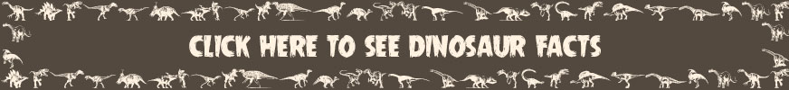
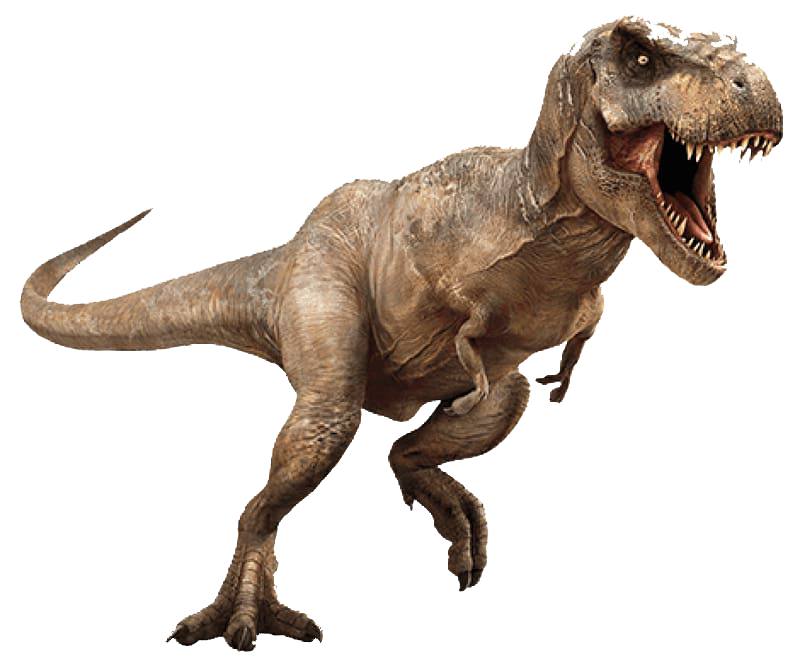
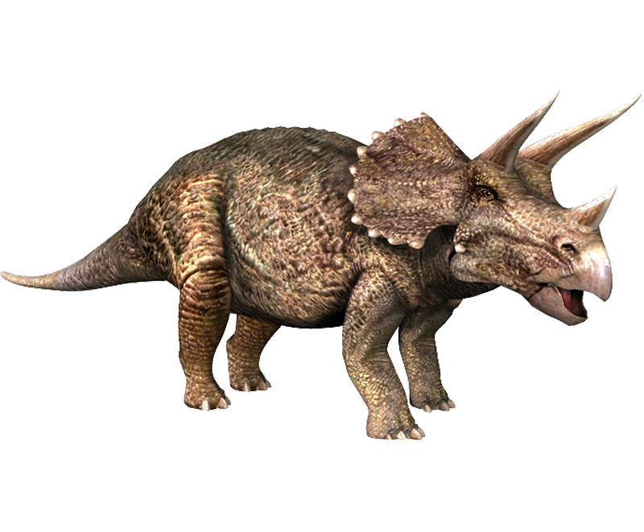

Dinosaurs ruled the Earth for over 160 million years, from the Triassic period around 230 million years ago through the Jurassic period and until the end of the Cretaceous period around 65 million years ago.
The time period from 250 million years ago until around 65 million years ago is known as the Mesozoic Era. It is often referred to as the Age of the Dinosaurs because most dinosaurs developed and became extinct during this time.
While dinosaurs came a long time before us humans, fossils and modern technology have helped us piece together what dinosaurs may have looked like and even how they might have behaved. Read on for a wide range of cool dinosaur facts.

The word dinosaur comes from the Greek language and means 'terrible lizard'. The word was coined by English paleontologist Richard Owen in 1842 and was meant to refer to Dinosaurs impressive size rather than their scary appearance.
It is believed that dinosaurs lived on Earth until around 65 million years ago when a mass extinction occurred.
Scientists believe that the event leading to the extinction may have been a massive asteroid impact or huge volcanic activity. Events such as these could have blocked out sunlight and significantly changed the Earth's ecology.
The first dinosaur to be formally named was the Megalosaurus, back in 1824.
A person who studies dinosaurs is known as a paleontologist.
Rather than being carnivores (meat eaters), the largest dinosaurs such as the Brachiosaurus and Apatosaurus were actually herbivores (plant eaters).
To help fight meat eaters such as the Allosaurus or Spinosaurus, many plant eaters had natural weapons at their disposal. Examples of this include the spikes on the tail of the Stegosaurus and the three horns attached to the front of the Triceratops's head shield.
Pterodactyls are not dinosaurs, they were flying reptiles that lived during the age of dinosaurs but by definition they do not fall into the same category. The same goes for water based reptiles such as Plesiosaurs.
Birds descended from a type of dinosaurs known as theropods.
Despite being long extinct, dinosaurs are frequently featured in the media. One of the more memorable examples of this is Michael Crichton's 1990 book Jurassic Park. Adapted to movie in 1993, the story features cloned dinosaurs brought to life with the help of DNA found in mosquitoes trapped in amber.
Tyrannosaurus Rex

Tyrannosaurus rex is possibly the most well known dinosaur due to its huge size, ferocious nature and regular appearances in popular media. Thanks to a number of well preserved fossils, the T-Rex has been studied in detail by paleontologists all around the world.
Triceratops

The Triceratops is easily recognized thanks to the three horns found on its face as well as its large body and the unique frill around its head. Find out just how big they were, what they ate, why they needed their horns and more interesting information.
Put your knowledge to the test with this fun dinosaur quiz. Answer a range of interesting questions related to everything from the Tyrannosaurus rex to the Diplodocus. How much do you know about dinosaur time periods, which dinosaurs were herbivores and which were carnivores, what they looked like and how many legs they moved on? Give it your best shot, check the answers at the end of the quiz and enjoy learning a range of information and fun trivia about dinosaurs.